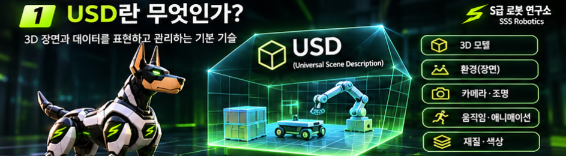
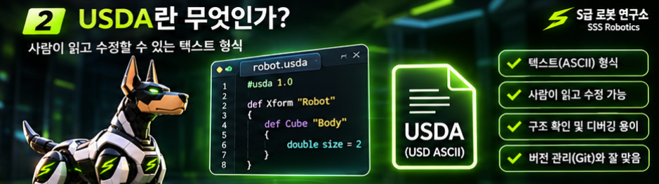
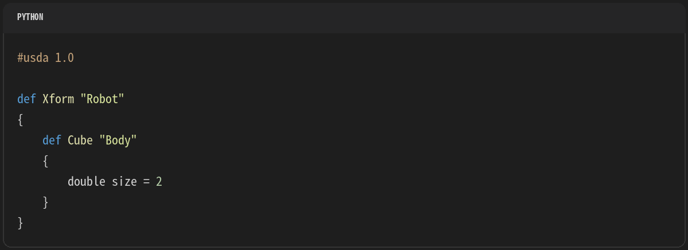
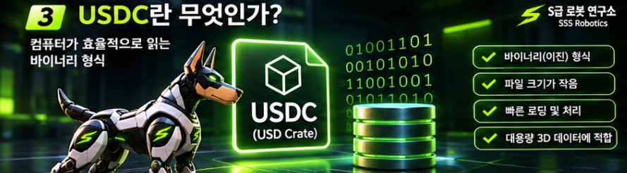
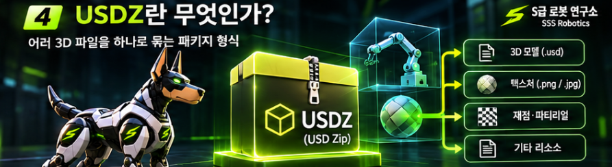
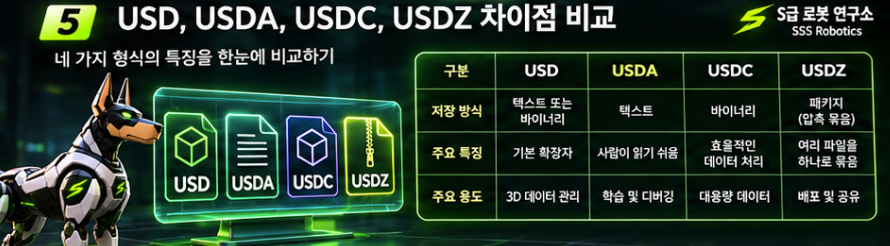
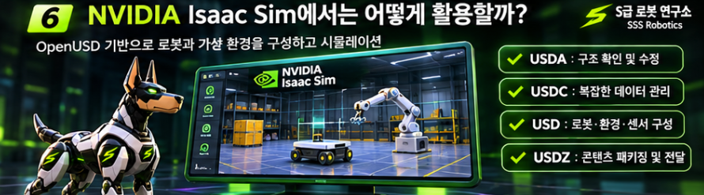

• Youtube : https://www.youtube.com/@sssrobotics
📌 안녕하세요, ‘S급 로봇 연구소’ 입니다.
오늘의 주제는 [ NVIDIA USD, USDA, USDC, USDZ의 차이점은 무엇인가? ] 입니다.
오늘의 핵심 세 가지 :
- USD : 3D 장면과 데이터를 표현하고 관리하는 기본 기술입니다.
- USDA / USDC : USD 데이터를 저장하는 두 가지 방식으로, 하나는 텍스트이고 다른 하나는 바이너리입니다.
- USDZ : 3D 모델과 텍스처 등의 관련 파일을 하나로 묶어 전달하는 패키지 형식입니다.

📚 목차
- 📖 오늘의 진행 내용 (Today's Topics)
- 📕 1. USD란 무엇인가?
- 📄 1-1. USD의 기본 개념
- ✏️ 1-1-1. USD가 중요한 이유
- 📕 2. USDA란 무엇인가?
- 📄 2-1. 사람이 읽을 수 있는 텍스트 형식
- ✏️ 2-1-1. USDA의 특징
- 📕 3. USDC란 무엇인가?
- 📄 3-1. 컴퓨터가 효율적으로 읽는 바이너리 형식
- ✏️ 3-1-1. USDC의 특징
- 📕 4. USDZ란 무엇인가?
- 📄 4-1. 여러 3D 파일을 하나로 묶는 패키지 형식
- ✏️ 4-1-1. USDZ의 특징
- 📕 5. USD, USDA, USDC, USDZ 차이점 비교
- 📄 5-1. 한눈에 비교하기
- ✏️ 5-1-1. 어떤 형식을 선택해야 할까?
- 📕 6. NVIDIA Isaac Sim에서는 어떻게 활용할까?
- 📄 6-1. 로봇 시뮬레이션과 USD
- ✏️ 6-1-1. 실제 활용 예시
- 📜 회고 및 다음 과제 (Retrospective & Next Steps)
- 📝 오늘 배운 내용 정리
- 🎯 다음 과제
- 👥 참고 문헌 (References)
- 📨 문의하기 (Contact us)
📖 오늘의 진행 내용 (Today's Topics)

📕 1. USD란 무엇인가?
📄 1-1. USD의 기본 개념
USD (Universal Scene Description) 는 3D 장면과 데이터를 표현하고 관리하기 위한 기술입니다.
쉽게 말하면, 3D 세상을 구성하는 여러 가지 정보를 하나의 구조로 관리할 수 있도록 도와주는 기술입니다.
예를 들어 로봇이 있는 가상 공간을 만든다고 가정해 보겠습니다.
- 로봇의 모양과 크기
- 바닥과 벽의 위치
- 카메라와 조명
- 로봇의 움직임
- 각 물체의 재질과 색상
이러한 정보를 USD를 통해 하나의 3D 장면으로 구성하고 관리할 수 있습니다.
✏️ 1-1-1. USD가 중요한 이유
기존에는 3D 모델이나 장면을 여러 파일로 나누어 관리해야 하는 경우가 많았습니다.
하지만 USD를 사용하면 여러 데이터를 연결하고 조합하여 하나의 장면으로 관리할 수 있습니다.
특히 여러 개발자가 같은 3D 프로젝트를 함께 작업하거나, 복잡한 시뮬레이션 환경을 구성할 때 유용합니다.
핵심: USD는 단순한 3D 파일이 아니라 3D 데이터를 구성하고 연결하는 시스템입니다.

📕 2. USDA란 무엇인가?
📄 2-1. 사람이 읽을 수 있는 텍스트 형식
USDA (Universal Scene Description ASCII) 는 USD 데이터를 일반 텍스트 형태로 저장하는 방식입니다.
쉽게 말하면 메모장이나 VS Code로 파일을 열었을 때 내부 내용을 직접 읽을 수 있는 형식입니다.
예를 들어 다음과 같은 내용을 확인할 수 있습니다.

PYTHON 코드
위 코드는 Robot이라는 그룹 안에 Body라는 큐브를 만드는 간단한 USD 표현입니다.
✏️ 2-1-1. USDA의 특징
- 사람이 직접 내용을 읽고 수정할 수 있습니다.
- 데이터 구조를 확인하거나 오류를 분석하기 좋습니다.
- GitHub와 같은 버전 관리 도구에서 변경 사항을 비교하기 쉽습니다.
- 데이터가 많아지면 파일 크기가 커지고 읽는 속도가 느려질 수 있습니다.
핵심: USDA는 사람이 읽고 수정하기 편리한 텍스트 형식입니다.

📕 3. USDC란 무엇인가?
📄 3-1. 컴퓨터가 효율적으로 읽는 바이너리 형식
USDC (Universal Scene Description Crate) 는 USD 데이터를 바이너리 형태로 저장하는 방식입니다.
쉽게 말하면 사람이 직접 읽기 어려운 대신 컴퓨터가 효율적으로 데이터를 읽고 처리할 수 있도록 만든 형식입니다.
✏️ 3-1-1. USDC의 특징
- USDA보다 일반적으로 파일 크기가 작습니다.
- 대용량 3D 데이터 처리에 효율적입니다.
- 데이터를 빠르게 읽을 수 있도록 설계되었습니다.
- 사람이 직접 내용을 수정하거나 확인하기는 어렵습니다.
예를 들어 복잡한 로봇 모델이나 대규모 시뮬레이션 환경을 관리할 때 유용합니다.
핵심: USDC는 대용량 3D 데이터를 효율적으로 저장하고 읽기 위한 바이너리 형식입니다.

📕 4. USDZ란 무엇인가?
📄 4-1. 여러 3D 파일을 하나로 묶는 패키지 형식
USDZ (Universal Scene Description Zip) 는 USD 파일과 관련된 여러 리소스를 하나의 패키지로 묶는 형식입니다.
쉽게 말하면 3D 모델을 다른 사람에게 전달할 때 필요한 파일들을 하나의 상자에 담는 것과 같습니다.
예를 들어 로봇 3D 모델을 다른 컴퓨터로 전달한다고 가정해 보겠습니다.
필요한 파일은 다음과 같습니다.
- 로봇의 3D 모델
- 표면의 색상과 재질
- 이미지 텍스처
- 기타 관련 리소스
이러한 파일들을 USDZ 패키지 하나로 묶어 전달할 수 있습니다.
✏️ 4-1-1. USDZ의 특징
- 여러 관련 리소스를 하나의 파일로 묶을 수 있습니다.
- 별도의 파일을 하나씩 전달할 필요가 줄어듭니다.
- 3D 콘텐츠 배포와 공유에 유용합니다.
- 일반적인 USD 작업 파일처럼 내부 데이터를 직접 편집하는 용도로는 적합하지 않습니다.
핵심: USDZ는 3D 콘텐츠를 하나로 묶어 전달하기 위한 패키지 형식입니다.

📕 5. USD, USDA, USDC, USDZ 차이점 비교
📄 5-1. 한눈에 비교하기
| 구분 | 저장 방식 | 주요 특징 | 주요 용도 |
|---|---|---|---|
| USD | 텍스트 또는 바이너리 | 기본 확장자 | 3D 데이터 관리 |
| USDA | 텍스트 | 사람이 읽기 쉬움 | 학습 및 디버깅 |
| USDC | 바이너리 | 효율적인 데이터 처리 | 대용량 데이터 |
| USDZ | 패키지 | 여러 파일을 하나로 묶음 | 배포 및 공유 |
✏️ 5-1-1. 어떤 형식을 선택해야 할까?
상황에 따라 적절한 형식을 선택하면 됩니다.
- USD: 일반적인 USD 작업 및 데이터 관리
- USDA: 내부 구조를 직접 확인하거나 수정할 때
- USDC: 복잡하고 많은 3D 데이터를 효율적으로 관리할 때
- USDZ: 완성된 3D 콘텐츠를 다른 사람에게 전달할 때
※ 참고로 .usd 확장자는 텍스트 형식과 바이너리 형식 모두 사용할 수 있습니다. 따라서 확장자만 보고 내부 저장 방식을 판단하면 안 됩니다.

📕 6. NVIDIA Isaac Sim에서는 어떻게 활용할까?
📄 6-1. 로봇 시뮬레이션과 USD
NVIDIA Isaac Sim 은 OpenUSD를 기반으로 로봇과 가상 환경을 구성하고 시뮬레이션할 수 있는 플랫폼입니다.
예를 들어 가상 공간에 로봇을 배치하고 주변 환경을 구성할 때 USD 데이터를 활용할 수 있습니다.
✏️ 6-1-1. 실제 활용 예시
- USDA를 사용하여 간단한 로봇 구조와 장면을 확인합니다.
- USDC를 활용하여 복잡한 3D 데이터를 효율적으로 관리합니다.
- USD를 통해 로봇, 카메라, 조명, 환경 데이터를 구성합니다.
- USDZ를 활용하여 필요한 3D 콘텐츠를 패키징하고 전달합니다.
이러한 방식으로 OpenUSD는 로봇 시뮬레이션과 디지털 트윈 환경을 구성하는 데 중요한 역할을 합니다.
📜 회고 및 다음 과제 (Retrospective & Next Steps)
📝 오늘 배운 내용 정리
오늘은 NVIDIA Omniverse와 Isaac Sim에서 활용되는 OpenUSD의 주요 파일 형식 네 가지를 살펴보았습니다.
처음에는 확장자만 달라 보일 수 있지만, 각각 저장 방식과 활용 목적에 차이가 있다는 것을 알 수 있었습니다.
특히 USDA는 사람이 읽기 편하고, USDC는 컴퓨터가 효율적으로 처리하기 좋으며, USDZ는 여러 리소스를 하나로 묶어 전달하는 데 유용하다는 점이 중요합니다.
🎯 다음 과제
☐ USDA 파일을 VS Code로 열어 내부 구조 확인하기
☐ USDA와 USDC 파일의 차이 직접 비교하기
☐ Isaac Sim에서 USD 파일 불러오기
☐ 간단한 로봇 모델을 USD 형식으로 저장해 보기

👥 참고 문헌 (References)
- NVIDIA Learn OpenUSD - OpenUSD File Formats
https://docs.nvidia.com/learn-openusd/latest/stage-setting/usd-file-formats.html
- OpenUSD Official Documentation - Frequently Asked Questions
- NVIDIA Omniverse - OpenUSD Frequently Asked Questions
https://docs.omniverse.nvidia.com/usd/latest/learn-openusd/faq.html
- NVIDIA Omniverse - Learn OpenUSD YouTube
📨 문의하기 (Contact us)

- Youtube : https://www.youtube.com/@sssrobotics
- Blog : https://www.sssrobotics.com
#S급로봇연구소 #로봇연구소 #sssrobotics #sss #OpenUSD #NVIDIA #IsaacSim #Omniverse #Robotics #PhysicalAI #피지컬AI #로봇 #시뮬레이션 #AI #AX #robot #simulation #엔비디아